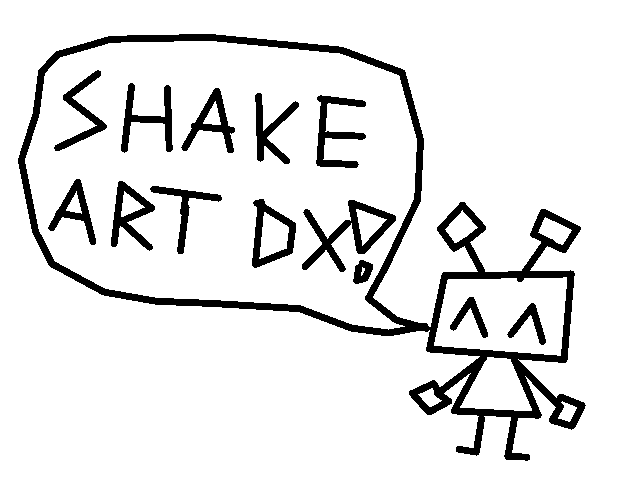

Shake Art Deluxe
back
Shake Art Deluxe is my most recent publicly released program. You can play it here.

It's an open source experimental art tool created in GameMaker Studio 2.
The lines shake to emulate vertex jitter from the PS1, loosely inspired by the game Vib-Ribbon.

The tool has garnered moderate success. It has roughly ~300k plays across itch.io and Newgrounds.
You'll notice this tool has "Deluxe" appended to its name. The original Shake Art I created was somewhat popular with Twitter users, but
struggled to gain much traffic due to a lack of a way to export images. It was also only black and white, with one line thickness.
Users would have to screen record their creations to share them.
When creating a sequel, I decided to focus first and foremost on adding GIF export so users could share their creations with ease.
I also added colors, undo/redo functionality, an erase tool, and a smooth way of drawing (in the original you would click to add points, now you can drag).